Вітальня · журнал «ДентАрт» 2014 №2 (75)
Професор Мирослава Дрогомирецька: «Ми поставили на службу українським пацієнтам світові стандарти»
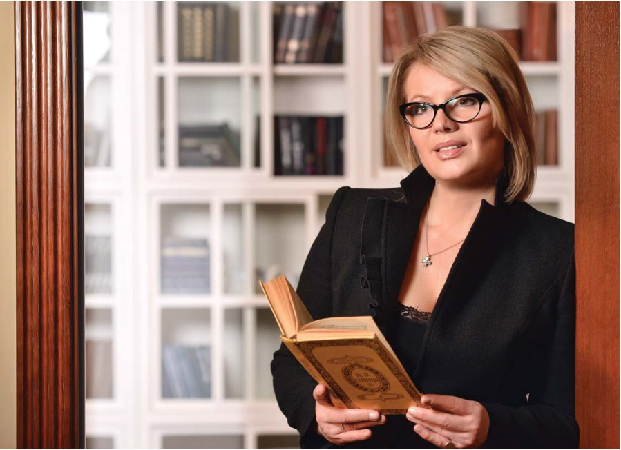
У дентартівській «Вітальні» сьогодні гостя, роль якої у розвитку сучасної української стоматології та підготовці кадрів для неї важко переоцінити. Мирослава Дрогомирецька – Заслужений лікар України, доктор медичних наук, професор, завідувачка кафедри ортодонтії Національної медичної академії післядипломної освіти ім. П.Л.Шупика, головний ортодонт Міністерства охорони здоров’я України. Мирослава Стефанівна — співзасновниця двох авторитетних професійних стоматологічних організацій – Асоціації ортодонтів України (її чинний президент) та Української академії естетичної стоматології, а також почесний член Європейської та Міжнародної асоціацій ортодонтів. «З повагою до здоров’я та краси» — девіз Центру ортодонтії київської Клініки естетичної стоматології Мирослави Дрогомирецької. Внесок професора Дрогомирецької у розвиток стоматологічної науки і практики високо оцінила Українська Держава, нагородивши її орденами Княгині Ольги ІІ і ІІІ ступеня.
«Завдання — лікувати організм, а не лише вирівнювати зуби»
— Мирославо Стефанівно, кілька десятиліть тому слово «ортодонт» було відоме небагатьом пацієнтам. Але сьогодні, коли люди, особливо молоді, надають великого значення красі усмішки, гармонії обличчя, до ортодонтів звертається усе більше відвідувачів стоматологічних клінік. Як змінилися завдання ортодонтії з часу її виникнення?
— Усе в цьому світі змінюється, і дивитися на пацієнта так, як раніше – звертаючи увагу лише на зуби, зубні ряди і щелепи – стоматолог уже не має права. Маємо сповідувати загальномедичний підхід до людського організму, важливою частиною якого є зуби. Ми часом навіть не уявляємо, яке значення має стоматогнатична система. Розвиток цивілізації супроводжується зміною екології, людського генотипу й фенотипу. Усе це позначається на розвитку зубощелепної системи, яка взаємодіє з усіма іншими системами. Наприклад, проблема з внутрішніми органами і психоемоційний стрес можуть призвести до дисфункції скронево-нижньощелепного суглоба, що призведе до стирання зубів. І навпаки, від розвитку краніо-мандибулярного комплексу дитини – основи черепа, щелеп, зубів – залежить стан цілого організму. Викривлення хребта, неврологічні проблеми, патологія дихальних шляхів – усе це часто пов’язане зі здоров’ям зубів і щелеп. Усі ці порушення слід розглядати в комплексі. Не випадково набирає популярності підхід, коли стоматологи працюють у зв’язці зі спеціалістами загального профілю, передусім з остеопатами, а також психологами, вертебрологами, лорами. Іноді проста остеопатична корекція з тим, щоб розблокувати шви в синхондрозах, стимулює ріст щелеп і подальшу саморегуляцію системи. Окрім того, маємо враховувати, що кісткова структура Homo sapiens сьогодні вже не та, що була у первісних людей. Остеопороз і остеопенія вже трапляються і в молодих. Дефіцит вітаміну D3 визначає низку проблем у дітей, коли у них активно формується череп, скелет, щелепи. Цей дефіцит зараз майже тотальний. Можна констатувати, що фосфорово-кальцієвий обмін у нового покоління порушений, тому будь-яка шкідлива звичка значно швидше приведе до розвитку зубощелепної патології. Наші предки не мали такої кількості патологій. Нас від них відрізняє відсутність фізичних навантажень, зокрема й недостатнє вживання твердої їжі, яка навантажує щелепи і допомагає їм правильно формуватися. Доведений «еволюційний» факт: зубні дуги у людей стають вужчими, кістки верхньої щелепи стають інакшими. У Франції є цілий інститут, який займається лікуванням загальних соматичних проблем – таких як апное, неврологічні розлади, навіть сколіози – з допомогою функціональної ортодонтії та із застосуванням дихальної методики Бутейка. Ми забули про профілактику, про можливості функціональних апаратів у гонитві за незнімною технікою. Одне із завдань, що ставимо перед собою ми, члени Асоціації ортодонтів України, – розставляти певні пріоритети. Ми маємо лікувати організм, а не просто вирівнювати зуби.
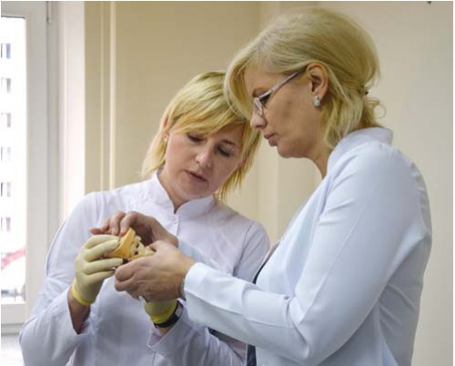
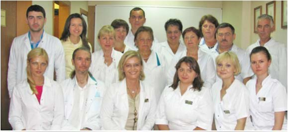
— Чи став мультидисциплінарний підхід справжньою Біблією сучасної стоматології?
— Клініки, які поважають себе і дбають про перспективу, сповідують виключно мультидисциплінарний підхід, коли різні фахівці за спільним столом обговорюють загальний план лікування. Справді, сьогодні вузькі спеціалізації в стоматології отримали надзвичайно високий розвиток. У нас чудово розвиваються ендодонтія, пародонтологія, імплантологія. Високотехнологічно працює естетична стоматологія, яка досконало передає колір, форму зуба штучними матеріалами. Але до певного часу вони розвивалися відокремлено одна від одної. А пацієнт найчастіше має кілька суміжних проблем, які належать до різних галузей медицини. У нього вже своя «зубна історія». Тому перед фахівцями постала необхідність бачити проблему пацієнта в комплексі, з різних точок зору і в результаті консиліуму приймати оптимальне рішення для пацієнта. Наприклад, клубок проблем пацієнта можуть спільними зусиллями розплутувати ортодонт, ортопед, хірург і терапевт. Так формується план лікування з послідовністю втручань різного характеру – хто і на якому етапі. Звісно, мультидисциплінарний підхід може забезпечувати й один фахівець, якщо він має відповідну багатопланову підготовку.
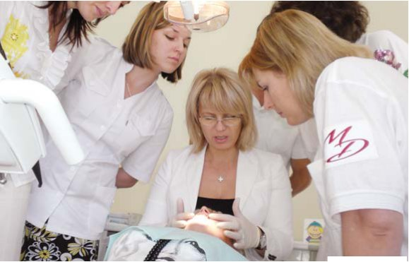
«Важливо, щоб не пізніше 7-річного віку кожна дитина відвідала ортодонта»
— Який відсоток дітей в Україні має ортодонтичну патологію?
— Ми можемо говорити про 70-80% дітей із зубощелепною патологією! Найчастіше маємо справу з проблемою звуженості зубних рядів і патології окремих зубів. Серед вад прикусу найпоширеніша патологія дистальної оклюзії, коли нижня щелепа надзвичайно мала. Останнім часом дуже вражає кількість випадків перехресного прикусу, які мають наслідком патологію скронево-нижньощелепного суглоба. У дітей у молочному прикусі також поширена проблема перехресної позиції, зміщення нижньої щелепи. Якщо ці порушення не лікувати, вони переростають у функціональні й скелетні патології. Доки ріст щелепних кісток не припинився, ортодонти фактично можуть виступати в ролі пластичних хірургів – моделювати обличчя. Саме тому своєчасно почати лікування – це половина успіху.
— Як поліпшити організацію ортодонтичного лікування дітей, а також інформування батьків про можливості такої допомоги?
— Передусім ми тісно співпрацюємо з педіатрами, дитячими стоматологами, щоб донести розуміння ролі зубощелепної патології, факторів ризику, які до неї призводять. Проводимо спільні медичні конференції. В результаті ортодонти мають багато консультацій, на які пацієнтів скерували педіатри. Нинішні батьки, маючи широкий доступ до інформації, також підвищили свою обізнаність із проблемами розвитку дитини. Однак ми не втомлюємося наголошувати під час просвітницької роботи з батьками: украй важливо, щоб не пізніше 7-річного віку кожна дитина відвідала ортодонта! Бо, на жаль, проблемою є те, що у багатьох регіонах система диспансеризації і професійних оглядів дітей зруйнована. А саме вона давала можливість профілактики, раннього виявлення проблем і запобігання розвитку важких патологій.
«Ми перші ухвалили Етичний кодекс ортодонта»
— Ортодонти – не такий уже й чисельний загін стоматологічної спільноти, але, мабуть, дружний. Що важливого відбувається у житті Асоціації ортодонтів України?
— Асоціація живе достатньо активно і ставить собі амбітні завдання. Це громадська організація, покликана передусім об’єднувати ортодонтів, піднімати престиж нашої професії в Україні. Ми перші в стоматологічній спільноті ухвалили Етичний кодекс ортодонта, в якому відобразили фахові стандарти у ставленні до колег, до пацієнта і його таємниці та інших важливих моментів. З другого боку, через свої інформаційні ресурси ми намагаємося доносити до пацієнтів інформацію про можливості сучасної ортодонтії, правильні діагностичні процедури та інше. Ми виявляємо регіональні й загальноукраїнські проблеми, що є в нашій сфері, шукаємо, як їх вирішити. Орієнтиром для нас є не збільшення кількості ортодонтів, а підвищення якості їхньої допомоги через систему безперервного навчання. Відвідуючи європейські конгреси й конференції, ми отримали розуміння стандартів ортодонтичної допомоги, передаємо ці знання українським фахівцям. Наша асоціація і сама на досить високому рівні організовує подібні заходи. Так, минулого року відбувся перший ортодонтичний конгрес в Україні. У ньому взяли участь і колеги з усього світу, котрі високо оцінили і якість організації, і можливості української ортодонтії до розвитку. На травень в Україні був запланований міжнародний конгрес із функціональної ортодонтії. Міжнародна асоціація функціональної ортодонтії традиційно щороку проводить такі конгреси у різних країнах світу. Зверніть увагу, для нашої галузі це подія, рівнозначна футбольному Євро-2012. Причому ми виграли тендер на проведення цього заходу, конкуруючи з Австрією. На жаль, через складну ситуацію в Україні і на її кордоні довелося перенести конгрес на осінь цього року.
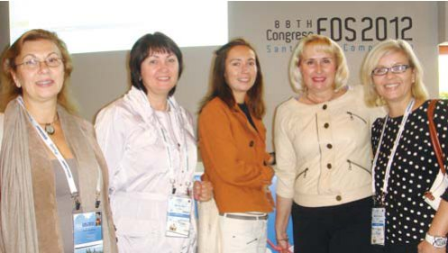
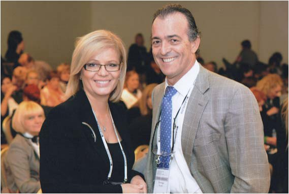
— Справді, сьогодні геополітичний конфлікт порушив професійні і життєві плани мільйонів українців. Як світова медична спільнота реагує на суспільні потрясіння в Україні?
— Асоціація ортодонтів України як громадське об’єднання не могла стояти осторонь цих подій. З моєї ініціативи було написано лист-звернення до колег з усього світу із проханням на своєму рівні підтримувати цілісність і суверенітет України, не допустити, щоб протистояння, спровоковані політиками, завадили нашому професійному спілкуванню. Це було до так званого «референдуму» в Криму. Усі українські осередки асоціації одноголосно підтримали цей лист, і його було розіслано учасникам міжнародної ортодонтичної спільноти. Абсолютна більшість фахівців із різних країн висловила підтримку нам і Україні загалом. Їхні емоційні відгуки можна прочитати на нашому сайті aou.com.ua А ми не припиняємо колегіальних і людських стосунків з нашим кримським осередком, проводимо з ним онлайн-конференції, розвиваємося разом.
— Чи прислухається наша держава до Асоціації ортодонтів України, її ініціатив у медичній сфері?
— Можу сказати, що ми зробили революційний крок: за нашою пропозицією видано наказ Міністерства охорони здоров’я України щодо стандартизованої медичної документації в ортодонтії. Ідеться про єдину медичну карту, яка містить перелік усього, що мусить зробити ортодонт, ведучи пацієнта. Тим самим ми вивели на один рівень усіх лікарів-ортодонтів. Той, кому бракує глибини знань, має стимул підтягнутися.
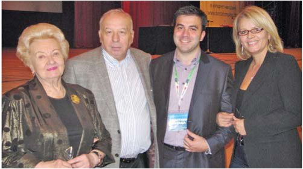
«Естетика стоматології — світовий тренд»
— Ви стали співзасновницею Української академії естетичної стоматології. Якими завданнями живе ця організація?
— Естетика стоматології нині є світовим трендом. Пацієнти стають вимогливішими, і ті нюанси нашої роботи, що пов’язані з візуальною красою, набули нового значення. Наше завдання – розвивати в Україні цей напрям. Восени відбудеться черговий з’їзд академії. Треба віддати належне її президенту Сергієві Радлінському, який зробив дуже багато для цього напрямку стоматології. Свідченням наших успіхів стало те, що Міжнародна федерація естетичної стоматології прийняла Українську академію до своїх лав під час цьогорічної Генеральної асамблеї у Чикаго.
— Реклама, кіно й музична індустрія «засліплюють» глядача ідеальними усмішками. Без сумніву, Вам доводиться мати справу і з впливами масової культури на формування запитів пацієнтів. Чи може естетика усмішки бути загальним шаблоном?
— У жодному разі. Вона має бути індивідуальною. Я страшенно не люблю виразу «голлівудська усмішка». Він, як і слово «євроремонт», є штампом, узагальненим поняттям, значення якого розмите. Варто говорити про гармонію, і не лише усмішки, а й усієї особистості. Індивідуальність допускає не цілком рівний зубний ряд, певний малюнок кривизни, що може бути елементом гармонії і шарму. Звісно, за умови відсутності функціональних дефектів. Згадайте неймовірну усмішку актриси Аліси Фрейндліх, хоча зі стоматологічної точки зору вона не ідеальна. Стоматолог у кожному конкретному випадку має шукати гармонію – це і є головний принцип естетичної стоматології.
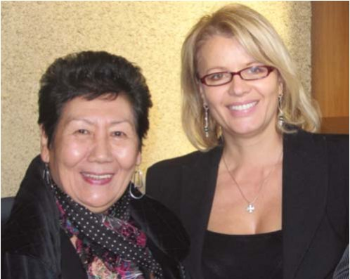
«Лише завдяки підтримці найрідніших людей я можу самовдосконалюватися у професії»
— Пані Мирославо, якщо повернутися в минуле, скажіть, із чого починався Ваш шлях стоматолога?
— У медицину я хотіла йти завжди, причому збиралася стати хірургом, хоч я і не з династії медиків. Вибір спеціальності був випадковістю. Мене переконали, що є добре поле для самореалізації – хірургічна стоматологія. Тодішня загальна стоматологія з архаїчними педалями для ніг і пекельною бормашиною захоплення не викликала. І хоча я навчилася майстерно видаляти зуби, це не був той доленосний момент, коли знаходиш своє покликання. Щелепно-лицьовим хірургом я бути не хотіла, але мені подобалося змінювати щось таким чином, щоб оздоровлення мало візуальний вимір. Захопитися ортодонтією мені допоміг мій чоловік, котрий, також будучи стоматологом, висловив думку, що нам варто піти цими суміжними, але водночас різними шляхами. Переломною подією для мене стала міжнародна конференція у Москві на початку 90-х, де професор Гульсара Оспанова презентувала незнімні ортодонтичні апарати. Я на той момент уже мала певний досвід роботи ортодонтом, але побачене мене вразило. Я підійшла до Гульсари Бекіївни і кажу: «Де мені навчитися працювати з цими конструкціями?» Вона відповіла просто: «Приїжджайте до нас, навчимо». Так я стала одним із першопрохідців, що привезли брекети в Україну і вчили наших лікарів працювати з ними, пізнавати філософію цих методик.
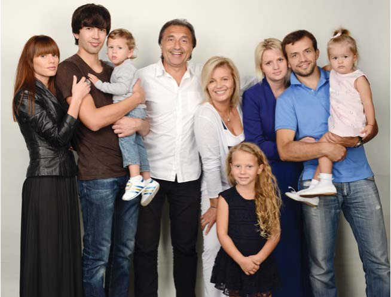
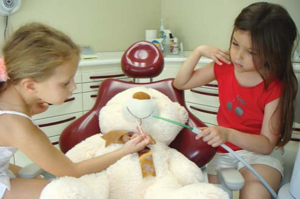
— Клініка «Перфект-Дент» стала вашою першою сімейною справою. Яка роль родини у становленні вашого стоматологічного бізнесу?
— Без сім’ї моя кар’єра стоматолога не склалася б. І навпаки – без стоматології не було б цієї родини, адже ми з чоловіком познайомилися на факультеті (він навчався на старшому курсі). Згодом Володимир як досвідченіший стоматолог мені дуже допомагав своїми порадами. Працюючи пліч-о-пліч, ми створили першу приватну клініку у Львові. Уявіть, що це означало в тих умовах, коли Україна ще не знала норм, стандартів, правил менеджменту в медицині. Ми створювали клініку передусім для себе. Вважаю, що кожен професіонал має сам забезпечити собі умови, в яких йому буде комфортно працювати. Ми їздили на міжнародні конгреси, конференції і бачили, якою має бути сучасна стоматологія. І ці стандарти ми поставили на службу українським пацієнтам, які заслуговували кращої допомоги, ніж та, яку могла дати бюджетна сфера. Лише завдяки сім’ї, підтримці найрідніших людей я могла не припиняти самовдосконалюватися у професії. І не припиняю цього і зараз.
— Ваші діти обрали батьківську стезю чи йдуть своїм шляхом?
— Коли мої двоє синів ще підростали, я усвідомила, що не дуже прагну, аби вони обоє ставали стоматологами. Не хотілося, щоб «династійна» професія визначала їхнє життя і стосунки одне з одним. Згодом старший Володимир обрав економіку і здобув другу юридичну освіту. Він успішно реалізує себе в цих царинах. А молодший Андріан все-таки спробував піти нашим шляхом і з успіхом закінчив стоматологію, захистив магістерську роботу. У нього дуже тонке відчуття форми, дизайну – в стоматологічному сенсі. Однак досить швидко він зрозумів, що не зможе стояти біля стоматологічного крісла, практична стоматологія не для нього. Зате він знайшов себе у медичному менеджменті. Керує нашими львівськими компаніями, і я із захопленням спостерігаю за тим, як сучасно він мислить і вибудовує свою управлінську роботу. Дечому я вже вчуся у нього.
— Ваша найменшенька, донечка Софія, вже проявила свої зацікавлення?
— Софія — це наше сонечко. Їй лише сім років, але вона має надзвичайно різнопланові інтереси. Це співи, танці, музика, плавання, катання на лижах. Та особливо – малювання, в якому вона вже виробляє смак і стиль. Це справжня Левиця – за Зодіаком і характером. Мені здається, що би Софійка не обрала в житті, вона стане ще однією нашою помічницею.
«Тримаємо руку на пульсі усіх нових наукових тенденцій»
— Маємо багато прикладів, коли стоматологи-викладачі відкривають свої клініки. Ви ж здійснили дещо інший шлях – маючи приватну клініку, захистили кандидатську і докторську дисертації. Що Вас спонукало до наукових пошуків?
— Коли ми відкрили перший приватний кабінет, я працювала на кафедрі. Звісно, ейфорії приватної стоматології, коли ти ні від кого не залежиш, складно не піддатися. Тож і в мене були думки полишити університет заради практичної роботи. Але я досить швидко зрозуміла, що, зачинившись у приватній практиці, я не зможу зростати фахово і морально, перетворюся на американського дантиста, який по закінченні вузу має досить високий рівень, але, занурившись у приватну справу, залишається на тому рівні все життя. А в стоматології, як і в медицині у цілому, навчатися треба постійно. Зрештою, моє бажання пізнавати щось нове ніколи не згасало.
— Які наукові теми Вас цікавили?
— Оскілки я була першопрохідцем у застосуванні незнімної ортодонтичної техніки в Україні, я присвятила цьому кандидатську. На той час, у 90-х роках, було багато думок про те, що брекети викликають руйнування зубної емалі. Щоб розвіяти міфи, я взялася дослідити тему впливу незнімної техніки на емаль і профілактики демінералізації емалі під час такого лікування. З вдячністю згадую свого наставника і керівника дисертації Ніну Іванівну Смоляр, у якої багато навчилась і в професійному, і в людському плані. Незнімна техніка в ортодонтії крокувала світом і Україною, і якщо раніше її застосовували переважно в лікуванні дітей, то тепер стали відомі можливості дорослої ортодонтії, яка має свої особливості. Докторську дисертацію я присвятила ортодонтичному лікуванню дорослих із захворюваннями тканин пародонту. Моїм наставником і консультантом була Оксана Василівна Деньга, представниця одеської школи стоматології. Хоча я привезла незнімну техніку в Україну, я зараз з усіх сил доводжу, що брекети – не панацея. Це лише інструмент. Найважливіше, що повинен знати ортодонт, – це правильна діагностика і правильне планування лікування. А вже який саме апарат застосовувати – це питання його вибору і питання адаптації пацієнта до плану лікування.
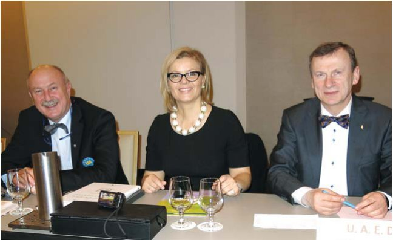
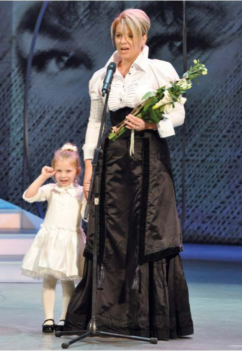
— Відомо, що патології прикусу впливають на загальне здоров’я пацієнтів, і ці зв’язки між, здавалося б, віддаленими захворюваннями нині активно досліджують…
— Безумовно, в людському організмі все пов’язано. І ми зараз активно розвиваємо філософію ортодонтії, яка враховує вплив зубощелепної патології на стан організму в цілому. Досліджуємо такі питання, як зв’язок ортодонтичного лікування і усунення дисфункції суглобів, зв'язок між ортодонтією, головним болем, викривленням хребта, плоскостопістю чи грижею в поперековому відділі. Важливе і дискусійне питання: чи вся ортодонтична патологія потребує медичного лікування, чи йдеться радше про питання зовнішньої естетики? Усі ці проблеми, які вирішує світова ортодонтія, є на порядку денному українських фахівців завдяки тому, що наша Асоціація ортодонтів включена у світовий науковий і медичний дискурс. Кафедра ортодонтії Національної медичної академії післядипломної освіти, яку я очолюю, також тримає руку на пульсі усіх нових наукових тенденцій.
— Ваш життєвий девіз?
— Живіть, як велить серце.
— Ваше побажання колегам — читачам журналу «ДентАрт», а це стоматологи з 13 країн світу.
— Якою б складною не була ситуація, будь ласка, залишайтеся людяними. Зруйнувати те, що створювалось роками: дружні стосунки, професійні контакти — можна за одну мить. А на те, щоб побудувати прекрасний дім, дім у найбільш широкому сенсі — професійну клініку, дружний професійний колектив, щасливу сім’ю і, тим більше, державу — необхідні роки. І лише нашими з вами спільними зусиллями, крок за кроком, ми можемо змінювати життя на краще. А зміни завжди починаються з себе. Тому бажаю вам тільки позитивних змін!